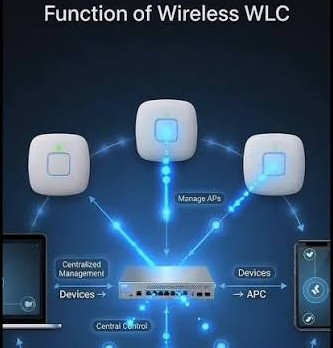

<html lang="en"></html>
<head>
  <meta charset="UTF-8">
  <meta http-equiv="X-UA-Compatible" content="IE=edge">
  <meta name="viewport" content="width=device-width, initial-scale=1.0">
  <title>My Portfolio</title>
  <link rel="stylesheet" href="style.css">
  <link href='https://unpkg.com/boxicons@2.1.4/css/boxicons.min.css' rel='stylesheet'>
</head>
<body>

    <nav>
        <a href="#" class="logo"><span>Cesar</span></a>

        <ul class="links">
            <a href="#home">Home</a>
            <a href="#about">About</a>
            <a href="#projects">Projects</a>
            <a href="#vision">Vision</a>
        </ul>

        <i class='bx bx-menu-alt-right' id="menu"></i>

    </nav>

    <section id="home">
        

        <div class="info-box">
            <h1><span>Hello, Im Cesar</span></h1>
            <h3><span>Computer Engineer</span></h3>
            <p>
                I am active in Network Security and designing Network Architecture of Business enterprise.
                I am ethusiastic in the field of Information System, Security Administrator and Network rebuilding. 
                Thank you for visiting my portfolio.
                "Self discipline is the bridge between goals and achievements".
                

            </p>
        </div>

        <div class="btn-box">
            <div class="btn">Hire</div>
            <div class="btn">Contact Me</div>
        </div>
    </section>

    <section id="about">

        <div class="about-box">

            <div class="about-info">
                <h1><span>About Me<span></h1>
                <p>    A dual degree in education, having earned a bachelor's degree in Electronics Technology and Computer Engineering. 
                   Currently active in Network Infrastructure & Security of DOST- TAPI. I am an expert on Firewall Administration, Firewall Policy
                  creation and Policy Based routing system. I am also expert in Network Architecture Design of Small to Medium Business
                  Enterprise. I have my Cisco Network and Security Certification and DevNet Associate Certification.
                  The capacity to recognize, create, and resolve challenging engineering issues.
                </p>
            </div>
            <h2><span>Skills</span></h2>
            <div class="skills">
                <ul>
                    <li>
                        <span><i class='bx bx-chevron-right'></i> Network Security</span>
                    </li>

                    <li>
                        <span><i class='bx bx-chevron-right'></i> Network Architecture Designing</span>
                    </li>

                    <li>
                        <span><i class='bx bx-chevron-right'></i> Firewall Administrator</span>
                    </li>

                    <li>
                        <span><i class='bx bx-chevron-right'></i> Network Maintenance</span>
                    </li>
                </ul>

                <ul>
                    <li>
                        <span><i class='bx bx-chevron-right'></i> ReactJs</span>
                    </li>

                    <li>
                        <span><i class='bx bx-chevron-right'></i> Arduino</span>
                    </li>

                    <li>
                        <span><i class='bx bx-chevron-right'></i> Python</span>
                    </li>

                    <li>
                        <span><i class='bx bx-chevron-right'></i> C Turbo</span>
                    </li>
                </ul>
            </div>
        </div>
        

    </section>

    <section id="projects">
        <h1 class="header"><span>Projects</span></h1>

        <div class="projects-container">

            <div class="box">
                 <h1><span>Web Tools</span></h1>
                 <a href="https://cesario28.github.io/MyWebTools/">Project link</a>
                  <p>
                    These are the various platforms of Web development. All these tools
                    are very useful in a profession of Software Engineer. There's a lot of 
                    tools on the web and I only research some like Python, Node JS, J Query
                    and etc.
                  </p>
                  
            </div>
        

            <div class="box">
                  <h1><span>Cetralized Wi-Fi access point</span></h1>
                  <a href="">I am the initiator of this project, MIS-FAD Division</a>
                 <p>
                  This project serves as an entire building access of internet wireless connection.
                  It is very efficient specially for everyone during Zoom meeting, ready any time
                  anywhere inside the building.
                 </p>
                 
            </div>

            <div class="box">
                 <h1><span>Deploying FORTIGATE 401-F</span></h1>
                 <a href="">As a main contributor of Security, I configured a Fortigate Firewall.</a>
                  <p>
                    This security device has a lot of safeguarding features and advance firewall
                    technology. I also one of the Administrator of this firewall.
                    This ensures the data security and the Network security of our enterprise.
                    It also serves as a mastermind in our network privacy in both external and internal.
                    I love this occupation as a Fortigate Administrator.
                  </p>
                   
            </div>

             <div class="box">
                 <h1><span>Deploying FORTIGATE 401-F</span></h1>
                 <a href="">As a main contributor of Security, I configured a Fortigate Firewall.</a>
                  <p>
                    This security device has a lot of safeguarding features and advance firewall
                    technology. I also one of the Administrator of this firewall.
                    This ensures the data security and the Network security of our enterprise.
                    It also serves as a mastermind in our network privacy in both external and internal.
                    I love this occupation as a Fortigate Administrator.
                  </p>
                   
            </div>          
        </div>

    </section>

    <section id="vision">

        <div class="vision-box">
         <h1 class="header"><span>Vision</span></h1>
             <p>
               Forseeing my future is part of a masterplan in my  mind. 
               I want to architecture my goals in life in a strategic way. 
               I'm looking forward to achieve the career status like Senior Network Security Engineer. 
               I orchestrating specific skills on various platforms that are involve in the roadmap of a Network Security Engineer.
               I always believe that if you want to learn something, be consistent, focus and dedicated to your goal. 
               I can visualize that my profession can be more deeper if I will continue to learn, gain and catch up different skills in programming and software development.
               

             </p>
        </div>
        
    </section>

    <footer>

        <div class="col-left">
            <div class="col-box">
                <span><i class='bx bxs-location-plus' ></i></span>
                <span>Block 5 Lot Vensdinville, Sanja Mayor, Tanza, Cavite</span>

            </div>

            <div class="col-box">
                 <span><i class='bx bxs-phone' ></i></span>
                 <span>0970-327-1986</span>
    
            </div>

            <div class="col-box">
                <span><i class='bx bxs-envelope' ></i></span>
                <span>bongcesa@gmail.com</span>
   
           </div>

        </div>

    </footer>

    <script src="script.js "></script>
  
</body>
</html>
